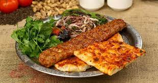

Adana Kebab

Description
Adana kebab (Turkish: Adana kebabı) is a dish that consists of long, hand-minced meat. Mounted on a wide iron skewer and grilled on an open mangal
filled with burning charcoal. The culinary item is named after Adana, the fifth-largest city of Turkey and was originally known as the kıyma kebabı
(lit: minced meat kebab) or kıyma in Adana-Mersin and the southeastern provinces of Turkiye
Ingredients
- 1 lb ground lamb
- 1 lb ground beef meat
- 4 teaspoons olive oil, for brushing on pita's;
- 4 teaspoons salted butter, small cubes
- 1 red bell pepper, minced
- 1 medium yellow onion, minced
- 3 garlic cloves, minced
- 1 cup yoghurt
- 2 medium red onions, sliced very thin
- 1 teaspoon of sumac
- 1 teaspoon of lemon juice
- 8 pieces pita bread or naan bread
- 2 teaspoons red pepper flakes
- 2 teaspoons ground coriander
- 2 teaspoons cumin
- 2 teaspoons black pepper
- 2 teaspoons salt
- 2 teaspoons sumac, can be found in any middle eastern store or you can omit this step. Its for onion to not to make smell.
How to make Adana Kebab
- In a large mixing bowl add lamb and veal.
- Then add minced bell peppers and onions to the bowl.
- Add all the spices and mix well
- Cover and put in fridge(or somewhere cool) for overnight. (Or wait for few hours)
- Mix lemon juice, sumac and red onion in small bowl cover and put in the fridge.
- Using your hands shape mixture into long and flat Adana Kebab shape.
- Place on a hot grill and cook until it gets darker red and then brown.
- Kebabs will be done when they feel spongy or dry and like a brown colour.
- When it is done place the kebab inside of a pita bread if you want to make a durum (wrapped) Kebab.
- Top with yogurt sauce and sliced red onion mixture or place it next to kebab in plate.
- This can also be served with a side of rice.
Enjoy :)